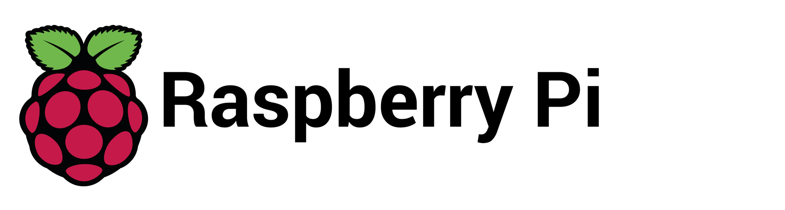

Raspberry Pi#
La Raspberry Pi es una microcomputadora de bajo costo y tamaño reducido. Ofrece un sistema completo en una sola tarjeta que integra un procesador, memoria, puertos de entrada/salida, puertos periféricos de video, USB y conectividad a red. En términos simples, es una computadora con capacidades adicionales de entrada y salida de propósito general (GPIO), lo que la convierte en una herramienta poderosa para aplicaciones de IoT. Aunque la filosofía detrás del diseño de un sistema embebido es la reducción de recursos innecesarios, la Raspberry Pi integra casi todo lo necesario para el sistema electrónico y el backend de dispositivos IoT, lo que la hace atractiva para los desarrolladores.
Warning
Las Raspberry Pi, desafortunadamente, no integran convertidores analógico-digitales (ADC) en su diseño. Esto significa que no pueden leer directamente señales analógicas. Sin embargo, es posible utilizar módulos ADC externos que se conectan a través de los pines GPIO para habilitar esta funcionalidad en una Raspberry Pi. Algunos ejemplos de módulos ADC populares compatibles incluyen el ADS1115, MCP3008 y el MCP3208.
La Raspberry Pi es conocida por su versatilidad y capacidad para ejecutar sistemas operativos completos. Hay una amplia gama de opciones disponibles, como Raspbian, el sistema operativo oficial basado en Linux Debian; Ubuntu Mate, una versión adaptada de Ubuntu para Raspberry Pi; Ubuntu Core, una versión ligera y segura de Ubuntu diseñada para dispositivos IoT y sistemas embebidos; y Windows 10 IoT Core, una versión de Windows 10 diseñada para dispositivos IoT. Estas opciones permiten a los usuarios elegir según sus preferencias y necesidades específicas.
La capacidad de interacción con el mundo físico de la tarjeta no se ve limitada por el hardware que integra. Una de las características que hacen atractivo el uso de Raspberry Pi en proyectos de IoT es su capacidad de escalabilidad. Si se utiliza la tarjeta como un servidor principal en un sistema, es posible crear una red de sistemas electrónicos de diferentes naturalezas que intercambien información con la tarjeta como getaway (Fig. 13).
{kind=link}
Fig. 13 Raspberry Pi como servidor de un sistema IoT. Tomada de 6.#
Para trabajar entonces con estas tarjetas es necesio una configuración previa para instalar el SO y configurar la conectividad. Para ellos se puede referir a la documentación oficial link
Note
La tarjeta que se puede tener dispinible para este curso será especifiamente las Raspberry Pi 4 modelo B de 2 GB de e LPDDR4 RAM y procesador Quad core 64-bit ARM-Cortex A72 con una velocidad de reloj de 1.5GHz. La detalles tennicos completos los puede consultar directamente en el data sheet link.
{kind=link}